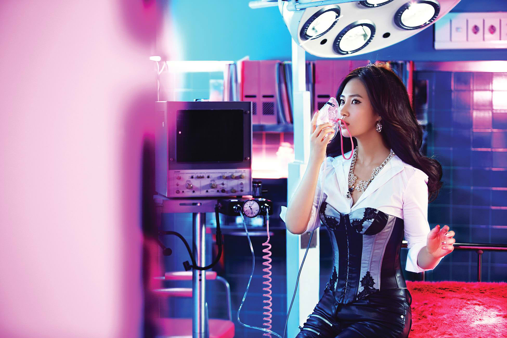

<!DOCTYPE html>
<html>
<head>

	<title></title>
	<link rel="stylesheet" type="text/css" href="memberStyle.css">

</head>
<body>

</body>
</html>

<div class="container">
	<div id="header">
		<font color="101010" size="60">0000000000000000000000</font>
		
		<a href="file:///home/eunice/Desktop/KIMBERLY OROZCO BSIS-2/index.html#section">MEMBERS</a><font color="101010">00</font>
		<a href=> SONGS</a><font color="101010">00</font>
		<a href=""> ALBUMS</a><font color="101010">00</font>
		<a href="">  ABOUT</a><font color="101010">0000</font>	
	</div>
	<br>
	<div id="member">
		<div id="section">
			<br>
		  	<div class="img">
			  <a target="_blank" href="taeyeon.html">
			 
			 </a>
			 </div>
				</div>
				<div id="name">Yuri</div><br><strong>
				Name: Kwon Yuri – Korean: 권유리<br>
				Birthday: December 5, 1989<br>
				Birthplace: Goyang, Gyeonggi, South Korea<br>
				Height: 167cm – Blood type: AB</strong><br><br>

				Played a part in sitcom Unstoppable Marriage (2007)<br>
				Duet with Sooyoung in Must – drama OST for Working Mom (2008)<br>
				Co-host with Tiffany for MBC Music Core (2009-2010, 2011-2012)<br>
				Starred in reality-variety show Invincible Youth (2009-2010)<br>
				Wrote the lyrics for Mistake (2010)<br>
				Starred in drama Fashion King (2012)<br>
				Starred in survival-variety show Dancing 9 with Hyoyeon etc. (2013)<br>
				Starred in movie No Breathing and solo for OST (2013)<br>
				Starred in variety show Animals (2015)<br>

	</div>
	<br>
	<div id="footer">
			Copyright &copy; 2016 girlsgeneration.com | Kimberly Orozco BSIS-2
	</div>

</div>